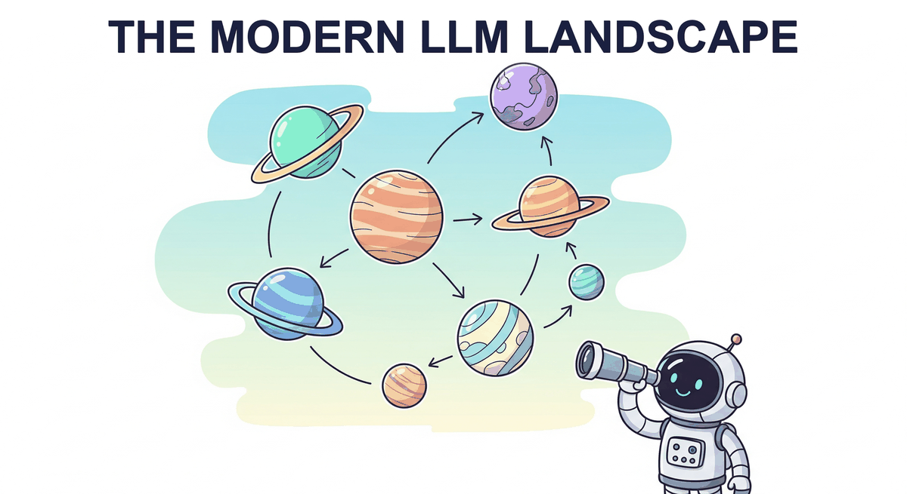

"The best way to predict the future is to invent it, but the second best way is to train a very large neural network on all of human text."
Eval, Prophetically Trained AI Agent

Chapter 7 told you how LLMs are trained. This chapter tells you which LLMs to actually use. The frontier (GPT, Claude, Gemini), the open-weight winners (Llama, Mistral, DeepSeek, Qwen, Gemma), and the architectural innovations that distinguish them (MoE vs. dense, GQA, sliding-window attention). This is the chapter to come back to whenever the question is "which model should I use for this task?"
Chapter Overview
The large language model ecosystem has grown at a breathtaking pace. Closed-source frontier models from OpenAI, Anthropic, and Google push the boundaries of capability, while open-weight releases from Meta, DeepSeek, Mistral, Alibaba, and Microsoft have democratized access to powerful models that anyone can download, fine-tune, and deploy. Meanwhile, a new class of reasoning models has emerged, shifting compute from training time to inference time through extended chains of thought, process reward models, and tree search over candidate solutions.
This chapter surveys the current landscape across four complementary perspectives. We begin with the closed-source frontier (Section 8.1), examining the capabilities, pricing, and architectural hints available for GPT-4o, Claude, Gemini, and their competitors. Section 8.2 dives deep into open-source and open-weight models, with particular attention to architectural innovations like DeepSeek V3's Multi-head Latent Attention, FP8 training, and auxiliary-loss-free Mixture of Experts. Section 8.3 explores the paradigm shift toward reasoning models and test-time compute scaling. Finally, Section 8.4 addresses the multilingual and cross-cultural dimensions that determine whether these models serve a global audience or remain English-centric tools.
The LLM landscape spans a spectrum from closed-source frontier APIs (maximum capability, least control) to open-weight models (full transparency, deployment flexibility). Understanding this spectrum, along with the emerging paradigm of reasoning models that shift compute to inference time, is essential for making informed architectural decisions throughout the rest of this book.
Learning Objectives
- Compare frontier closed-source models on capability dimensions including reasoning, multimodality, context length, and pricing
- Explain the architectural innovations in DeepSeek V3 (MLA, FP8, auxiliary-loss-free MoE) and their impact on efficiency
- Articulate the difference between train-time and test-time compute scaling, and identify when each is preferable
- Implement best-of-N sampling with a reward model and explain process vs. outcome reward models
- Evaluate multilingual LLM capabilities and understand the challenges of cross-lingual transfer
- Navigate the Hugging Face ecosystem to discover, download, and run open-weight models locally
- Describe Monte Carlo Tree Search applied to language generation and the AlphaProof approach
Prerequisites
- Chapter 04: Transformer architecture (attention mechanism, multi-head attention, feed-forward layers)
- Chapter 05: Decoding strategies (greedy, beam search, sampling methods)
- Chapter 06: Pre-training, scaling laws, and data curation fundamentals
- Basic familiarity with Python and the Hugging Face Transformers library
Sections
- 8.1 Closed-Source Frontier Models 🟢 🔬 GPT-4o, o1/o3, Claude 3.5/4, Gemini 2.0/2.5, Grok, Cohere, Mistral Large. Capabilities, pricing, context windows, and architectural insights.
- 8.2 Open-Source & Open-Weight Models 🟡 ⚙️ 🔧 Llama 3/4, Mistral/Mixtral, Gemma, Qwen, DeepSeek V3 architecture deep dive (MLA, FP8, MoE), Phi series, Hugging Face ecosystem.
- 8.3 Reasoning Models & Test-Time Compute 🔴 ⚙️ 🔧 o1/o3, DeepSeek-R1, process reward models, best-of-N sampling, Monte Carlo Tree Search, compute-optimal inference.
- 8.4 Multilingual & Cross-Cultural LLMs 🟡 🔬 Cross-lingual transfer, low-resource languages, cultural bias, multilingual evaluation, vocabulary extension techniques.
What's Next?
In the next chapter, Chapter 08: Reasoning Models and Test-Time Compute, we explore how reasoning models like o1, o3, and DeepSeek-R1 improve outputs by allocating more compute at inference time.